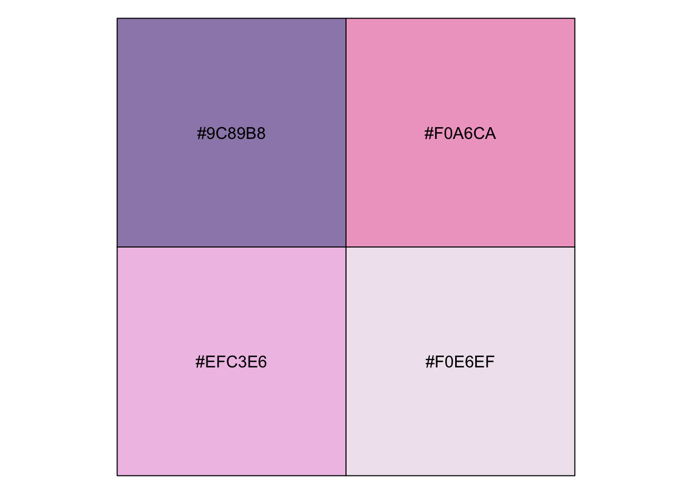

library(tidyverse)This was my second year attending rstudio::conf() as a diversity scholar (and my first time as a speaker), and I was yet again blown away by the friendliness of the community and the quality of the talks. Over the course of the week, I met so many wonderful and talented humans, and learnt so many incredibly useful things. This post is all about the little tips and tricks that I picked up from watching many fantastic presentations, attendees live tweeting, and having many insightful conversations.
Tip 1: Tidy evaluation
Tidy eval is one of those terms that seems to float around a lot in the R community, but I feel like 99% of us don’t really get what tidy eval is, nor why we should care about it. Turns out, unless we’re getting deep into package development, we probably don’t need to be up to speed with tidy eval. The only part of tidy eval that I know is this: how to supply column names as unquoted arguments in functions. All of the resources I found on tidy eval go into waaay more detail about how it works, and maybe one day I’ll care about that, but that time is not now.
For this (and the next few) example, I’ll use the midwest dataset from the ggplot2 package, the first 6 rows of which are shown below.
head(midwest)# A tibble: 6 × 28
PID county state area poptotal popdens…¹ popwh…² popbl…³ popam…⁴ popas…⁵
<int> <chr> <chr> <dbl> <int> <dbl> <int> <int> <int> <int>
1 561 ADAMS IL 0.052 66090 1271. 63917 1702 98 249
2 562 ALEXANDER IL 0.014 10626 759 7054 3496 19 48
3 563 BOND IL 0.022 14991 681. 14477 429 35 16
4 564 BOONE IL 0.017 30806 1812. 29344 127 46 150
5 565 BROWN IL 0.018 5836 324. 5264 547 14 5
6 566 BUREAU IL 0.05 35688 714. 35157 50 65 195
# … with 18 more variables: popother <int>, percwhite <dbl>, percblack <dbl>,
# percamerindan <dbl>, percasian <dbl>, percother <dbl>, popadults <int>,
# perchsd <dbl>, percollege <dbl>, percprof <dbl>, poppovertyknown <int>,
# percpovertyknown <dbl>, percbelowpoverty <dbl>, percchildbelowpovert <dbl>,
# percadultpoverty <dbl>, percelderlypoverty <dbl>, inmetro <int>,
# category <chr>, and abbreviated variable names ¹popdensity, ²popwhite,
# ³popblack, ⁴popamerindian, ⁵popasianSuppose that you want to write a function that plays nicely with the tidyverse (e.g. can take unquoted column names just like tidyverse functions do). Such an example might be one that makes a plot where the user supplies the variables:
plotMidwest <- function(var1, var2) {
ggplot(midwest) +
geom_point(aes(x = var1, y = var2))
}Theoretically, this plot should be able to take the arguments popdensity and percbelowpoverty and provide me with a scatterplot of these two columns against one another:
plotMidwest(popdensity, percbelowpoverty)Error in `geom_point()`:
! Problem while computing aesthetics.
ℹ Error occurred in the 1st layer.
Caused by error in `FUN()`:
! object 'popdensity' not foundbut this doesn’t work! Perhaps if I quote the variable names it will work:
plotMidwest("popdensity", "percbelowpoverty")
The above code didn’t throw an error, but this is literally plotting the word “popdensity” against the word “percbelowpoverty”, which isn’t what I wanted to do!
The secret to providing column names as arguments to a function is…. tidy eval! Fortunately even without understanding why it works (something about delaying evaluation until later in the execution path blah blah blah), you can use tidy eval. The way you do this is to envelop your arguments within the function in curly braces { }:
plotMidwestTidy <- function(var1, var2) {
ggplot(midwest) +
geom_point(aes(x = {{ var1 }}, y = {{ var2 }}))
}Now when I provide my column names as unquoted variables, I actually get the scatterplot I wanted!
plotMidwestTidy(popdensity, percbelowpoverty)
Note that my tidy eval version of my plotMidwest() function isn’t designed to take quoted variable names. The following code yields the same plot as before of the word “popdensity” against the word “percbelowpoverty”.
plotMidwestTidy("popdensity", "percbelowpoverty")
A neat little trick I learned from Dewey Dunnington’s talk is that you can use .data as placeholder for the data object inside aes(). This means that, if var is a character column name, you can access the quoted column from the data object using .data[[var]]:
plotMidwestQuoted <- function(var1, var2) {
ggplot(midwest) +
geom_point(aes(x = .data[[var1]], y = .data[[var2]]))
}
plotMidwestQuoted("popdensity", "percbelowpoverty") 
Dewey’s talk is full of gems (check out his slides: https://fishandwhistle.net/slides/rstudioconf2020/#1).
Tip 2: Pipe into later arguments of a function using .
While I didn’t technically learn this one from a talk at rstudio::conf(2020), I did run into an old friend Garth Tarr who told me about this piping trick: if you want to pipe an object into any argument other than the first one, you can do so using the . placeholder. For instance, let’s say that you want to use the lm() function to fit a linear model, and because you, like me, are pipe-obsessed, you want to pipe the data into lm().
Sadly, when I try to pipe the midwest data into my lm() function for regressing population density (popdensity) against poverty rate (percbelowpoverty), I get an error.
midwest %>%
lm(popdensity ~ percbelowpoverty)Error in as.data.frame.default(data): cannot coerce class '"formula"' to a data.frameWhat’s going wrong? There are two things you need to understand about what’s happening here:
The argument order of
lm()is:lm(formula, data), i.e. the data is the second argument of thelmfunction (whereas all tidyverse functions have the data as the first argument)The pipe,
%>%, automatically places the object to the left of the pipe into the first argument of the function to the right of the pipe
so midwest %>% lm(popdensity ~ percbelowpoverty) above is equivalent to lm(formula = iris, data = Sepal.Length ~ Sepal.Width), which has the arguments reversed.
Instead of abandoning the trusty pipe (the thought of which fills me with sadness), I can instead pipe the data into the second argument using . as a placeholder for the position into which I want to pipe the data:
midwest %>% lm(popdensity ~ percbelowpoverty, .)
Call:
lm(formula = popdensity ~ percbelowpoverty, data = .)
Coefficients:
(Intercept) percbelowpoverty
4068.06 -77.56 Note that I could alternatively name the formula argument, which would automatically pipe the object into the first unassigned argument (which in our case is the data argument), but this becomes cumbersome when you have many arguments.
midwest %>% lm(formula = popdensity ~ percbelowpoverty)
Call:
lm(formula = popdensity ~ percbelowpoverty, data = .)
Coefficients:
(Intercept) percbelowpoverty
4068.06 -77.56 Tip 3: Function conflicts workaround (no more dplyr::select())
Have you ever loaded the MASS R package and found that select() from dplyr no longer works? I regularly get this type of error when functions from different packages have the same name as tidyverse functions I use on the reg. Let’s pretend that I really want to select the cut variable from the diamonds dataset from the ggplot2 package.
The first 6 rows of the diamonds dataset are shown below:
head(diamonds)# A tibble: 6 × 10
carat cut color clarity depth table price x y z
<dbl> <ord> <ord> <ord> <dbl> <dbl> <int> <dbl> <dbl> <dbl>
1 0.23 Ideal E SI2 61.5 55 326 3.95 3.98 2.43
2 0.21 Premium E SI1 59.8 61 326 3.89 3.84 2.31
3 0.23 Good E VS1 56.9 65 327 4.05 4.07 2.31
4 0.29 Premium I VS2 62.4 58 334 4.2 4.23 2.63
5 0.31 Good J SI2 63.3 58 335 4.34 4.35 2.75
6 0.24 Very Good J VVS2 62.8 57 336 3.94 3.96 2.48Sadly if I loaded the MASS library before trying to select cut from diamonds, I get the following error:
library(MASS)
Attaching package: 'MASS'The following object is masked from 'package:dplyr':
selectdiamonds %>% select(cut)Error in select(., cut): unused argument (cut)This is because by loading MASS, I have overwritten dplyr’s select() function (hence the warning). The normal workaround is to be explicit about what select() function you want using dplyr::select() as in
diamonds %>% dplyr::select(cut)# A tibble: 53,940 × 1
cut
<ord>
1 Ideal
2 Premium
3 Good
4 Premium
5 Good
6 Very Good
7 Very Good
8 Very Good
9 Fair
10 Very Good
# … with 53,930 more rowsBut this can be really annoying if you have a lot of select()s in your code (because you have to go through and apply dplyr:: to each one). It turns out (as tweeted by Birunda Chelliah - I’m not where she learned it though) that a better workaround is to set conflict hierarchies at the top of your document (conflict_prefer("select", "dplyr")) to specify that the select() function should always come from the dplyr package.
# install.packages("conflicted")
library(conflicted)
# set conflict preference
conflict_prefer("select", "dplyr")[conflicted] Will prefer dplyr::select over any other package.Now when I use select() it works just fine!
# no more error!
diamonds %>% select(cut)# A tibble: 53,940 × 1
cut
<ord>
1 Ideal
2 Premium
3 Good
4 Premium
5 Good
6 Very Good
7 Very Good
8 Very Good
9 Fair
10 Very Good
# … with 53,930 more rowsTip 4: geom_col(): you’ll never have to specify “stat = identity” for your bar plots ever again!
Most of the time when I want to make a bar chart, I want to provide an x variable for the bar categories, and a y variable for the height of the bar for each category. Sadly, this isn’t what geom_bar() does by default - its default behaviour is to count each level of the provided x aesthetic. For instance, in the diamonds dataset, the cut variable takes 5 unique values: fair, good, very good, premium and ideal. Providing cut as the x-aesthetic for geom_bar() will, by default, count the number of times each of these unique values appear in the data and use these counts as the heights.
The default usage of geom_bar() is as follows
diamonds %>%
ggplot() +
geom_bar(aes(x = cut))
which automatically counts the number of time each cut appears in the data.
However (putting aside arguments about what types of data bar charts are appropriate for), I frequently want to use a bar chart to display something other than a count. For instance, the average price of each cut, shown below.
average_price <- diamonds %>%
group_by(cut) %>%
summarise(average_price = mean(price)) %>%
ungroup()
average_price# A tibble: 5 × 2
cut average_price
<ord> <dbl>
1 Fair 4359.
2 Good 3929.
3 Very Good 3982.
4 Premium 4584.
5 Ideal 3458.If I try to set the y aesthetic of geom_bar to y = average_price, I get an annoying error:
average_price %>%
ggplot() +
geom_bar(aes(x = cut, y = average_price))Error in `geom_bar()`:
! Problem while computing stat.
ℹ Error occurred in the 1st layer.
Caused by error in `setup_params()`:
! `stat_count()` must only have an x or y aesthetic.The typical fix for this is to include stat = 'identity' as an argument of geom_bar().
average_price %>%
ggplot() +
geom_bar(aes(x = cut, y = average_price), stat = "identity")
But it turns out there’s a better way!
During his fantastic talk on his ggtext package, Claus Wilke) casually used the geom_col() function to create a column chart (is that what geom_col() stands for?), which, as it turns out, is what I’ve been trying to make the whole time:
average_price %>%
ggplot() +
geom_col(aes(x = cut, y = average_price))
This probably wasn’t what Claus imagined me to take away from his talk, but I swear ggtext was super cool too!
Tip 5: Using show_col() for viewing colour palettes
Last but not least, Dana Paige Seidel gave a great talk on the scales package, which does a lot of great things under the hood of ggplot. But scales also let’s you look at colours! The show_col() function shows you what colours look like:
library(scales)
show_col(c("#9C89B8", "#F0A6CA", "#EFC3E6", "#F0E6EF"))
Also a quick plug for how I chose these colours (and how I choose colours in general): https://coolors.co/app.
I’m super excited for rstudio::conf(2021)!!